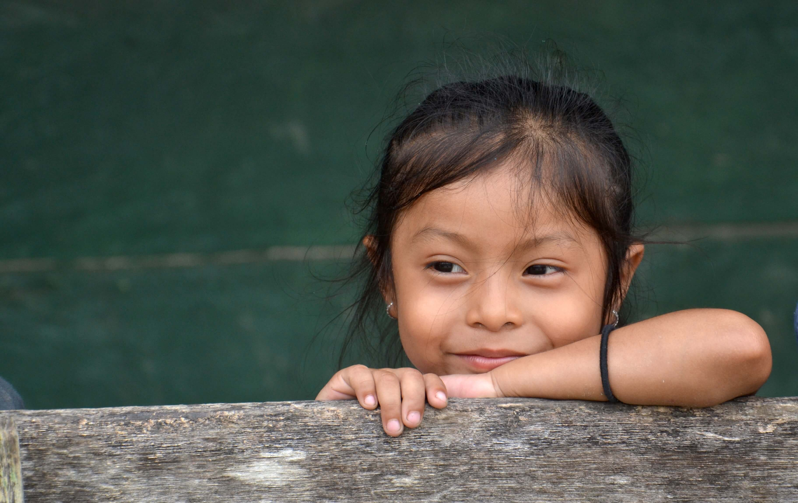
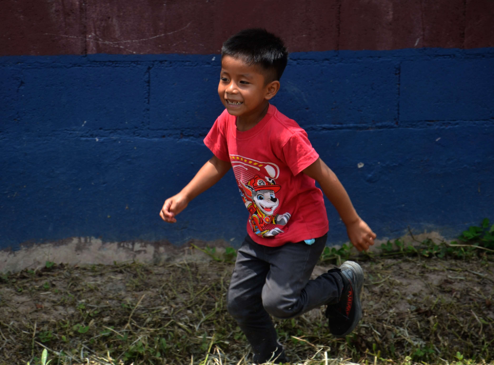
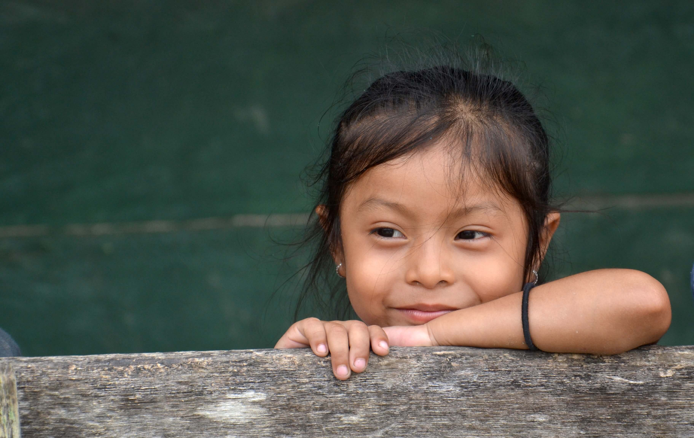
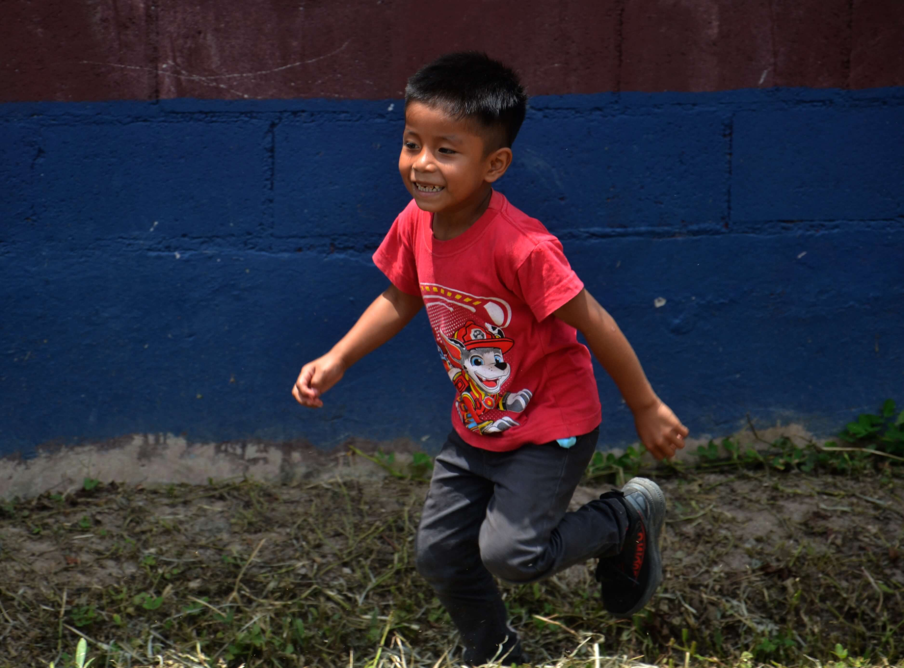

Centro Regional
Dirección: Aldea Nimlajacoc, Cobán, Alta Verapaz, Guatemala
Teléfono: +502 5150-0454
Email: programaflamenco@outlook.com
Radio Comunitaria Nimlajacoc 92.4
Dirección: Centro Regional, Aldea Nimlajacoc, Cobán, Alta Verapaz, Guatemala
Teléfono: +502 5919-1837
WhatsApp: +502 3709-4726
Mensaje: +502 4629-854
Email: radionimlajacoc@outlook.com
Síguenos en Facebook

 


